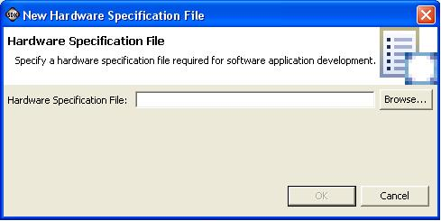

Embedded hardware components
Hardware specification file
SDK requires you to specify a hardware specification file before you can start developing C/C++ application projects. When SDK starts for the first time with a given workspace, it opens the New Hardware Specification File dialog box prompting you to specify the location of the hardware specification file. You can also specify a new hardware specification file at any time during application development by selecting Hardware Design > Import Hardware Design, which opens the New Hardware Specification File dialog box.


Embedded hardware components
Hardware specification file
Copyright © 1995-2009 Xilinx, Inc. All rights reserved.